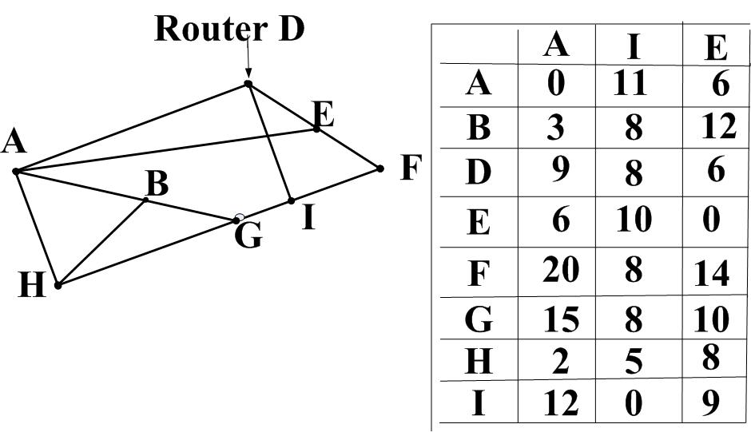

Daca datele coincid cu cele din imagine atunci e actual
| Clasa IP adresei | |
| Masca implicită de reţea | |
| Masca extinsa a IP adresei | |
| Numărul de biţi rezervaţi pentru subreţea | |
| Numărul maximal de subreţele posibile | |
| Numărul de biţi rezervaţi pentru nod | |
| Numărul maximal de noduri posibile în fiecare subreţea | |
| Identificatorul de REŢEA (în format zecimal cu punct) | |
| Identificatorul de SUBREŢEA | |
| Pasul subreţelei | |
| Numărul subreţelei ί, unde ί este numărul de biţi rezervaţi pentru subreţea | |
| Identificatorul SUBREŢELEI i (în format zecimal cu punct) | |
| Valoarea binară şi zecimală a măştii în octetul ce conţine nr. de subreţea şi o parte de nod | |
| Valoarea binară a octetului ce conţine nr. de subreţea şi o parte de nod | |
| Identificatorul de NOD a IP adresei iniţiale | |
| IP adresa iniţială poate fi atribuită unui nod | |
| Identificatorul primei subreţele atribuite cu primul nod | |
| Identificatorul primei subreţele atribuite cu ultimul nod | |
| Adresa de difuzare pentru prima subreţea atribuită | |
| Identificatorul ultimei subreţele atribuite cu primul nod | |
| Identificatorul ultimei subreţele atribuite cu ultimul nod | |
| Adresa de difuzare pentru ultima subreţea atribuită |